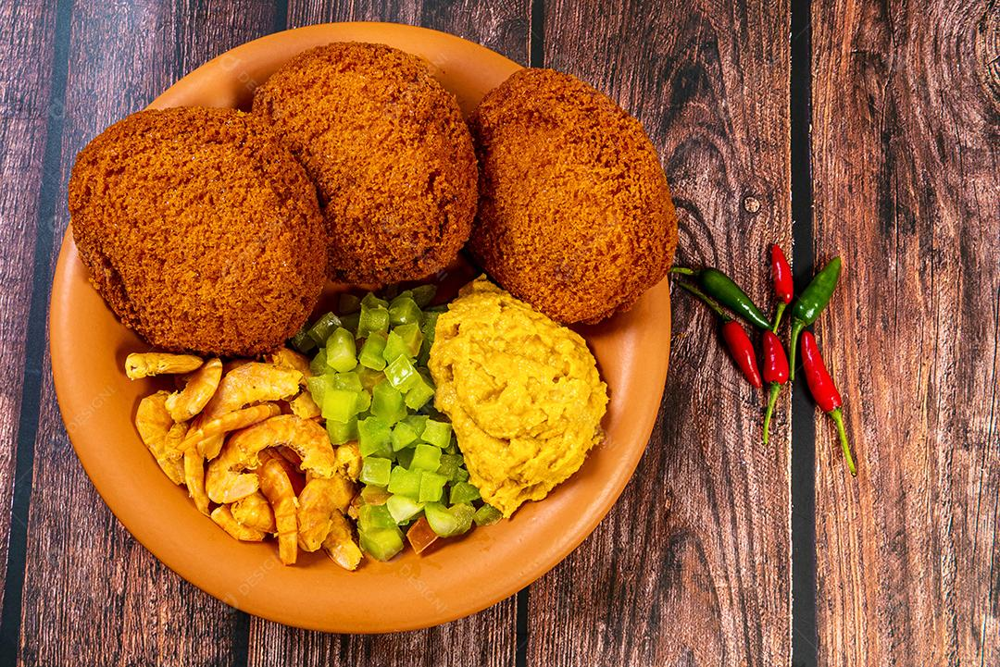

Acarajé

Descrição
Tradicional na culinária baiana, o acarajé é um bolinho à base de feijão-fradinho que faz sucesso por todo país. Frito no azeite de dendê, ele leva recheios peculiares, como o vatapá, feito com pão amanhecido, e o camarão.
O acarajé tem origem africana e outro recheio muito popular do bolinho é o molho à vinagrete. A pimenta também é muito utilizada para realçar ainda mais a explosão de sabores do quitute.
Ingredientes
- 500g de feijão-fradinho
- 1 cebola média
- 1 colher de sopa de sal
- 1 litro de azeite de dendê
- 300g de camarões secos
- 200g de vatapá
- Molho à vinagrete a gosto
- Pimenta a gosto
Modo de Preparo
- Deixe o feijão-fradinho de molho por 2 horas.
- Escorra e retire as cascas do feijão, esfregando entre as mãos.
- Bata o feijão com a cebola e o sal no liquidificador até obter uma massa homogênea.
- Aqueça o azeite de dendê em uma frigideira funda.
- Com uma colher, molde bolinhos com a massa e frite-os até dourarem.
- Retire os bolinhos e deixe escorrer em papel toalha.
- Recheie cada acarajé com vatapá, camarões secos, molho à vinagrete e pimenta a gosto.
- Sirva quente e aproveite!
Home